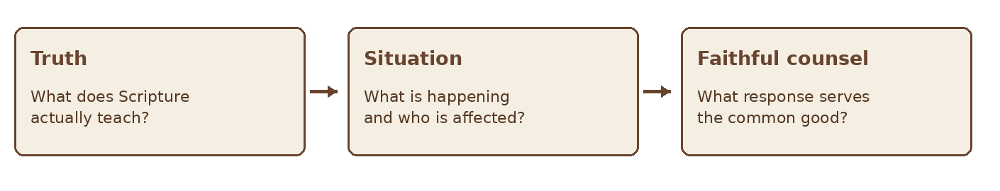
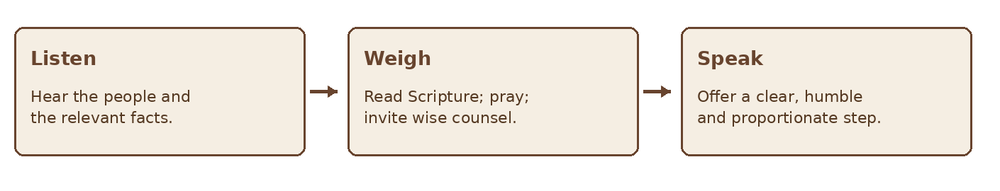
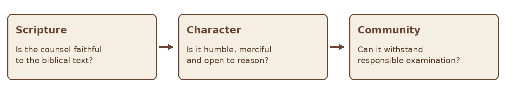

GIFTS OF THE HOLY SPIRIT · BIBLE STUDY
The Gift of Wisdom
A Bible study on wise counsel, the Spirit, and service
STUDY ONE • WISDOM
“For to one is given through the Spirit the message of wisdom.” — 1 Corinthians 12:8
This study examines the “message of wisdom” named by Paul. It also draws on the Bible’s wider teaching about wisdom so readers can seek it, practice it, and evaluate counsel. A particular Spirit-given message of wisdom should be distinguished from the wisdom all Christians are invited to ask God for and grow in.
Scripture at a Glance
| Passage | Contribution to the study |
|---|---|
| 1 Corinthians 12:4–11 | The Spirit distributes manifestations for the common good; verse 8 names a message of wisdom. |
| James 1:5–8 | Those who lack wisdom are invited to ask God. |
| James 3:13–18 | Wisdom from above is shown in conduct and described by its moral qualities. |
| Proverbs 9:10; 2:1–6 | The fear of the Lord and attention to God’s instruction are foundational. |
| 1 Corinthians 1:18–31; 2:6–16 | God’s wisdom is centered in Christ and contrasts with merely worldly status. |
| Acts 15:1–21 | A community weighs Scripture, testimony, and pastoral consequences in a difficult dispute. |
1 What Is the Gift of Wisdom
The Greek expression in 1 Corinthians 12:8 is often translated as “word of wisdom” or “message of wisdom.” Paul does not provide a formal definition or a step-by-step case study. In context, it is a manifestation given through the Spirit for the common good. It may involve timely, fitting speech that applies God’s truth to a real situation; that description is an interpretation of the passage, not a guarantee that every wise suggestion is a special revelation.
Wisdom is more than collecting facts. It involves sound judgment about what is true, good, timely, and loving in a concrete situation. Knowledge may identify what is known; wisdom considers how to act faithfully with that knowledge. Both appear in 1 Corinthians 12:8, but Paul does not define a rigid boundary between them.

Figure 1 Applying truth to a real situation
2 Wisdom Is Rooted in God
Proverbs connects wisdom with reverence for the Lord, teachability, and attention to instruction. James invites believers who lack wisdom to ask God. That invitation is for the whole church, whether or not someone receives a particular manifestation named in 1 Corinthians 12.
The New Testament also insists that God’s wisdom cannot be reduced to what looks impressive or advantageous. In 1 Corinthians 1–2, Paul centers God’s wisdom in the crucified Christ. Wise counsel should therefore be measured by faithfulness to Christ, not by confidence, novelty, eloquence, or personal influence.
3 What Wisdom from Above Looks Like
James 3:13–18 connects wisdom to humble conduct. James contrasts selfish ambition and disorder with wisdom that is pure, peaceable, gentle, open to reason, full of mercy and good fruits, impartial, and sincere. These qualities do not turn discernment into a simple checklist, but they provide a strong test of the posture and direction of counsel.
| Quality in James 3 | Question for wise counsel |
|---|---|
| Pure and sincere | Is the counsel truthful, with no hidden agenda? |
| Peaceable and gentle | Does it seek peace without concealing wrongdoing? |
| Open to reason | Can the person hear questions and corrections? |
| Merciful and impartial | Are affected people treated fairly and compassionately? |
| Good fruit | What conduct and outcome does this counsel tend to produce? |
Good fruit What conduct and outcome does this counsel tend to produce? Peaceable does not mean avoiding every difficult conversation. Wise counsel may call for correction or a firm boundary. The manner and purpose still matter: truth should be spoken with humility and concern for those involved.
4 How the Gift Serves the Church
A timely message of wisdom can help people apply biblical truth when several duties or concerns seem to compete. It may clarify a next step, help leaders weigh consequences, or redirect a group away from pride and toward faithful service. The aim is the common good, not dependence on one person’s supposed insight.

Figure 2 A responsible pattern for offering counsel
Acts 15 offers a useful picture of communal deliberation: the church addresses a disputed question through testimony, Scripture, and a decision communicated to others. The passage does not explicitly label anyone’s contribution the gift of wisdom; it illustrates why important judgments benefit from shared examination.
5 Wisdom and Ordinary Decision Making
Not every decision requires a supernatural impression. God may form wisdom through Scripture, prayer, experience, careful listening, and counsel. A person may offer a particularly timely word without needing to announce “God told me.” The content can be tested on its merits, and the speaker can remain open to correction.
| Helpful practice | Why it matters |
|---|---|
| State what you know | Separates established facts from assumptions. |
| Name the principle | Shows how Scripture bears on the choice. |
| Consider alternatives | Prevents one possible application from becoming absolute. |
| Allow accountability | Protects people affected by consequential advice. |
6 Test Counsel Before Acting
A proposed message of wisdom should agree with Scripture, reflect the character described in James 3, and serve people rather than elevate the messenger. When a decision has serious consequences, consult those with appropriate responsibility and relevant knowledge. Time can also expose overlooked facts or a better course.

Figure 3 Three checks for a proposed message of wisdom
Be cautious when someone claims unquestionable authority, demands secrecy, pressures a quick decision without good reason, or uses “wisdom” to control another person. A persuasive tone cannot make untested counsel binding.
7 A Practical Wisdom Journal
Use this page of questions with an actual situation. Record the issue before writing your preferred outcome.
| Prompt | Write or discuss |
|---|---|
| What is the decision? | State the question in one sentence. |
| What is known? | List facts, affected people, and relevant responsibilities. |
| What does Scripture address? | Name a passage and its principle in context. |
| What remains uncertain? | Separate unknowns from guesses and fears. |
| Whose counsel is needed? | Include mature believers and relevant expertise. |
| What is the next faithful step? | Choose an action proportionate to what is known. |
| What did I learn? | Revisit the outcome and remain willing to correct the course. |
Reflection and Discussion
- When have I confused confidence or eloquence with wisdom?
- How does James 3 challenge the way I give advice?
- Where do I need to ask God for wisdom rather than assume I already have it?
- What decision in my community would benefit from patient, shared discernment?
A Prayer for Wisdom
Father, You give wisdom generously. Teach me to listen before I speak, to understand Your Word in context, and to treat people with mercy and fairness. If Your Spirit gives me a timely word, help me offer it humbly for the good of others. Make me open to correction, patient with uncertainty, and faithful to Jesus Christ. Amen.
Further Study
Read James 1:5–8 and 3:13–18 together. Then read 1 Corinthians 12–14 as a whole, paying attention to love, the common good, and the building up of the church. Compare Proverbs 2 and Acts 15 as examples of seeking and practicing wisdom in different settings.